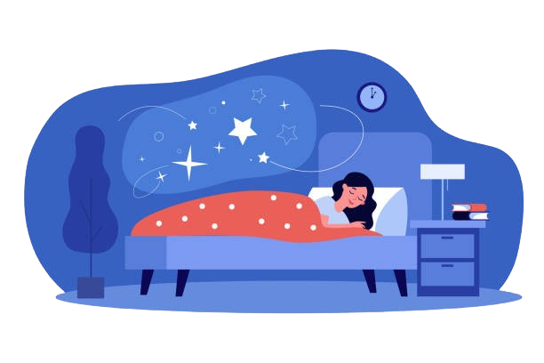
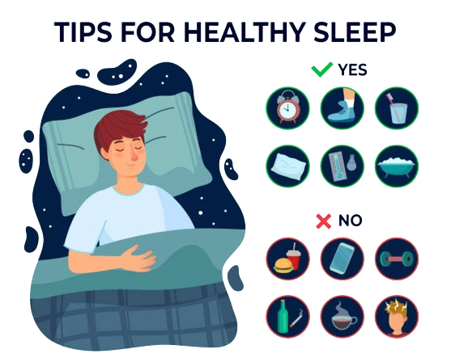
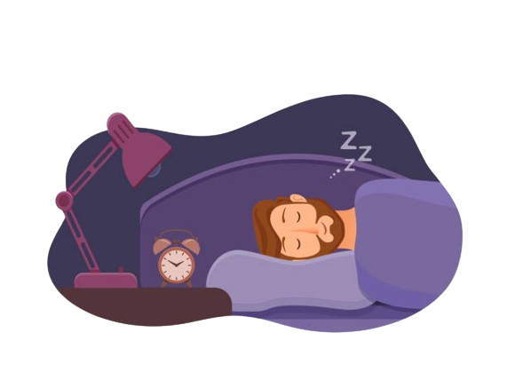

Unlock the Secrets of Your Sleep with Sleep Tracking
Are you tired of tossing and turning at night, unable to achieve a restful slumber?
Look no further! SleepTrackers.com is
here to revolutionize the way you approach your sleep health.
We understand the importance of quality sleep in maintaining overall
well-being, and that's why we offer cutting-edge sleep tracking solutions
to help you understand and optimize your sleep
patterns.
What is Sleep Tracking?
Sleep tracking involves monitoring various aspects of your sleep, such as
duration, quality, and stages, using
advanced technology. With the help of wearable devices, mobile apps, and
other gadgets, you can gain valuable insights
into your nightly sleep habits, allowing you to make informed decisions
to improve your sleep quality.
The Basics of a Good Night's Sleep
Adequate and restorative sleep is essential for optimal physical, mental,
and emotional health. Here are some fundamental
benefits of getting a good night's sleep:
Pros:
Enhanced Cognitive Function:
Quality sleep is crucial for cognitive processes such as memory
consolidation,
problem-solving, and decision-making. By prioritizing sleep, you can
sharpen your focus, boost productivity,
and improve overall mental performance.
Improved Mood and Emotional Well-being:
Adequate sleep plays a vital role in regulating emotions and mood.
Getting enough rest can help reduce irritability,
stress, and anxiety while promoting a more positive outlook on life.
Enhanced Physical Health:
Quality sleep is linked to better immune function, hormone regulation,
and cardiovascular health. By prioritizing
sleep, you can lower your risk of developing chronic conditions such as
obesity, diabetes, and heart disease.
Cons:
Disruption of Sleep Patterns:
Excessive use of electronic devices before bedtime, irregular sleep
schedules, and environmental factors such
as noise or light can disrupt your natural sleep-wake cycle,
leading to poor sleep quality.
Sleep Disorders:
Conditions such as insomnia, sleep apnea, restless leg syndrome,
and narcolepsy can significantly impact sleep
quality and overall well-being. Seeking professional help is crucial
if you suspect you have a sleep disorder.
Dependency on Technology:
While sleep tracking devices can provide valuable insights, relying
too heavily on technology to regulate sleep can
lead to dependency and anxiety surrounding sleep.


